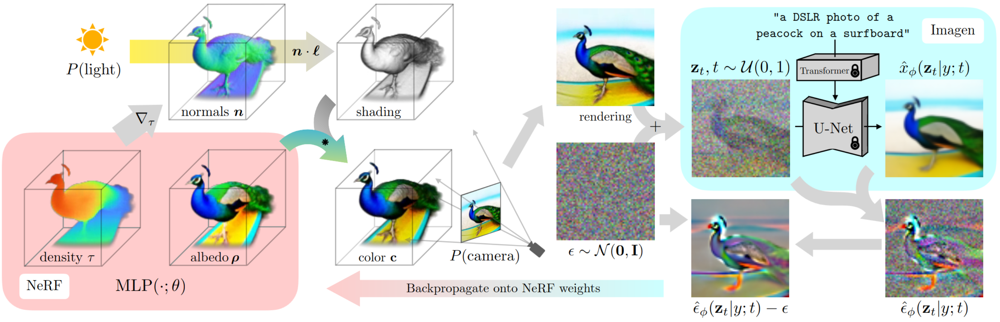

Watch the idea become visible.
A reference-guided journey from scientific question to an inspectable figure.
MECHANISM/FIGURESIllustrated workflow · not a live agent run01 / 06
FOUR INPUTS. ONE EXPLANATORY QUESTION.
01Project contextWhat system are we studying?
02Mechanism or resultWhat changes—and why?
03Data & evidenceWhat can the figure honestly claim?
04Output constraintsWho reads it, and at what size?

DreamFusion · Poole et al. · ICLR 2023
THE FIGURE'S ONE JOB
Show what changes
and how the feedback reaches it.


01
Begin with a question, not a chart.
The agent extracts one defensible relationship from your context, mechanism, evidence and output constraints.
0:00 / 1:00
Real reference figures. Editorial motion. No simulated agent results.
Read the walkthrough
- Question. Start from project context, the scientific mechanism, actual evidence and output constraints. State one relationship the reader must see.
- Study. Open two real approved figures. Record how their geometry, composition and annotation make the relationship visible.
- Construct. Map that visual operation to the project's true entities and update. Here, attention follows DreamFusion's state, rendering, fixed evaluator and return update; this is a reading of a published example, not new research.
- Critique. Test the rendered figure against its evidence, a captionless prediction and the chosen references. A score below the policy threshold triggers a revision, not an inflated evaluation.
- Deliver. Provide an editable figure, final-size preview, caption, generating code/evidence and a review bound to those exact files.
- Possibilities. Physical substrates, local-to-global dynamics, geometric computation and persistent correspondences are among the visual constructions the skill teaches. The displayed results belong to the original publication authors and are calibration targets, not outputs of the skill.